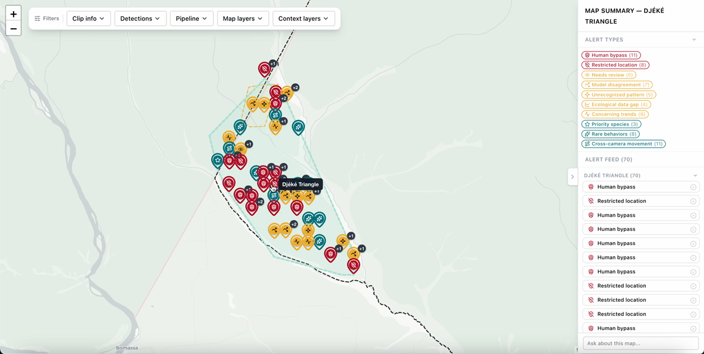
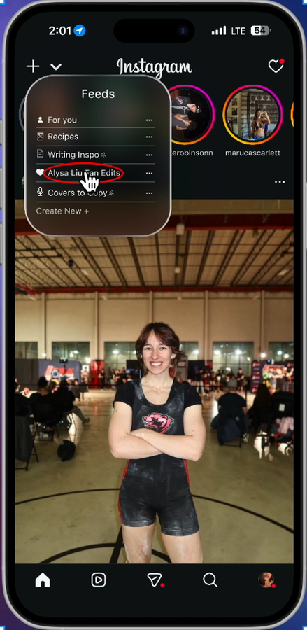

My Work
Featured Case Studies

SIDEKiC A practitioner dashboard for reviewing AI-processed wildlife camera trap footage from the Congo Basin. Digital Disparities
A data visualization tool exploring whether digital access gaps shape who receives substance use disorder treatment in St. Louis.
Digital Disparities
A data visualization tool exploring whether digital access gaps shape who receives substance use disorder treatment in St. Louis.
 WashU Care Navigation App
A tool that helps care navigators find accurate, up-to-date clinical and social services across Missouri.
WashU Care Navigation App
A tool that helps care navigators find accurate, up-to-date clinical and social services across Missouri.

Instagram Feed Feature A UX research project exploring whether more control over a social media feed can support well-being.Other Work
Swipe, drag, or use arrow keys to browse. Click a card to open its panel.